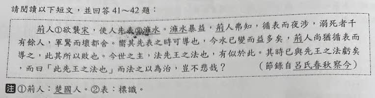
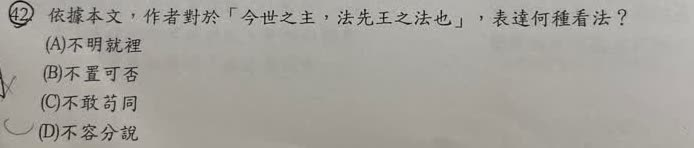

分享原卷｜第42題
完整原題
作答所需文章／材料
荊人①欲襲宋，使人先表②澭水。澭水暴益，荊人弗知，循表而夜涉，溺死者千有餘人，軍驚而壞都舍。嚮其先表之時可導也，今水已變而益多矣，荊人尚猶循表而導之，此其所以敗也。今世之主，法先王之法也，有似於此。其時已與先王之法虧矣，而曰「此先王之法也」而法之以為治，豈不悲哉？ ——節錄自《呂氏春秋・察今》 【原卷註釋】 ①荊人：楚國人。 ②表：標識。依據本文，作者對於「今世之主，法先王之法也」，表達何種看法？
(A) 不明就裡
(B) 不置可否
(C) 不敢苟同
(D) 不容分說
先想一想，再查看答案、解說與原圖
原卷作答：A（補拍近照另有鉛筆訂正C）
正確答案：C，不敢苟同，表示不能隨便贊同這種照搬做法。
逐項解析
| 選項與原句 | 判讀 | 句意與判斷理由 |
|---|---|---|
| (A) 不明就裡 | 不選 | 作者已指出時代與法制不相合，並非不了解內情。 |
| (B) 不置可否 | 不選 | 豈不悲哉明確表達批判，並非保持中立。 |
| (C) 不敢苟同 | 應選 | 不能隨便贊同照搬古法，符合本文反對立場。 |
| (D) 不容分說 | 不選 | 不是禁止別人說明，而是作者自己提出論證。 |
詳細說明與解題步驟
【完整白話】
楚國人想偷襲宋國，先派人在澭水設下標記。後來河水突然上漲，楚軍不知道，夜裡仍順著舊標記渡河，淹死一千多人，全軍驚慌混亂，聲勢如同大房屋崩塌。
先前設標記時，確實可以按標記通行；如今水況已變，水量大增，楚軍卻仍依舊標記渡河，這就是失敗原因。
當今君主照搬先王的法制，也像這件事。時代條件已與先王制法時不同，卻只因這是先王之法，就不作調整地拿來治理，難道不可悲嗎？
【字詞與因果】
襲是偷襲；表在先表澭水是設標記的動詞，在循表是標記的名詞；暴是突然，益在暴益中指水量增加、暴漲；弗是不；循是依循；涉是渡水。
嚮指先前；所以敗是失敗的原因；法先王之法，前一法是效法的動詞，後一法是法度的名詞；虧在此是相違、不相合。
原文未說標記一定做在白天，翻譯不另加白天。河水改變而標記未更新，才是故事關鍵；不是原先標記從一開始就完全無用。
【用結尾語氣判斷態度】
時代條件已不同，君主卻仍只因這是先王之法而照用。作者以荊人照舊標記渡河的失敗作比，再問豈不悲哉，明確批評不察時變、不知調整的做法，所以是不敢苟同。
不敢苟同不是膽小不敢說話，而是不能隨便表示贊同。A不明就裡是不懂內情；B不置可否是不表態；D不容分說是不許解釋，都不符作者已清楚提出理由、表達反對的立場。
作者批評的是不顧現實變化而機械套用，並非主張所有古法都一律錯誤、絕對不可參考。
核對註記：已依原卷或完整文字核對並獨立解題；對應教材課次未確認，歸綜合。
原圖（僅本題）

